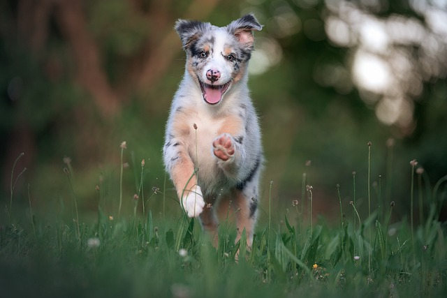

Adotar um animal é uma decisão nobre e importante que pode mudar tanto a vida do animal quanto a
vida do adotante. Sendo possível proporcionar um lar amoroso e seguro para um animal que pode ter
sido abandonado ou maltratado, além de contribuir com a redução de animais abandonados nas ruas.
Adotando você ganha mais do que um animal, ganha um fiel companheiro.